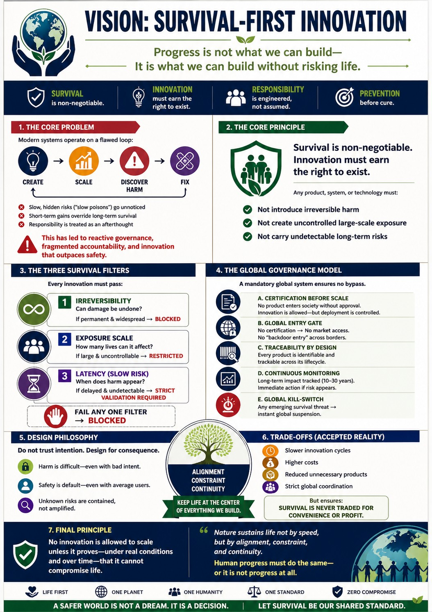

Alignment, constraint, and continuity as the ultimate benchmarks.
The Flawed Loop
Modern systems often prioritize short-term gains over long-term survival, leading to innovation that outpaces safety. WE recognize that reactive governance is no longer sufficient.
The Shift in Thinking
| Today’s Model | Proposed Model |
|---|---|
| Innovation first, safety later | Safety first, innovation after proof |
| Fix after failure | Prevent before release |
| Responsibility is assumed | Responsibility is engineered |
The Three Survival Filters
Every innovation must pass through these three checkpoints before scaling:
- Irreversibility: Can damage be undone? If permanent and widespread, it is blocked.
- Exposure Scale: How many lives can it affect? If large and uncontrollable, it is restricted.
- Latency (Slow Risk): When does harm appear? If delayed and undetectable, it requires strict validation.
Philosophy of Constraint
WE do not trust intention; we design for consequence. Survival is non-negotiable, and innovation must earn its right to exist.